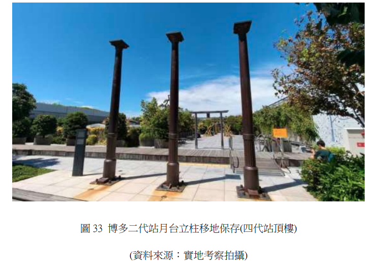
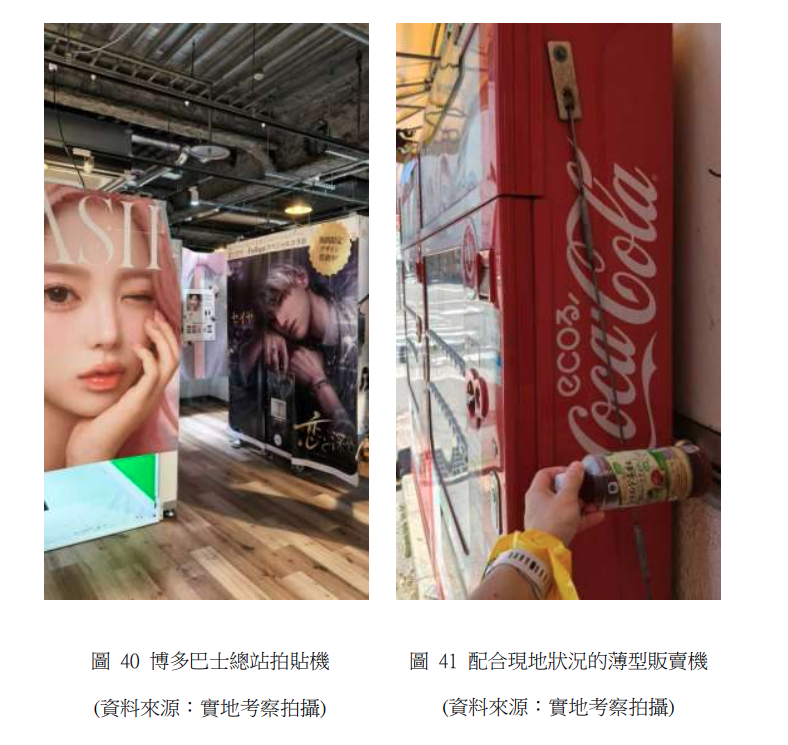

複製貼上、三根鐵柱與簽不完的備忘錄：一份臺鐵考察報告裡的魔幻現實
深度剖析臺鐵赴日考察與頻繁簽署 MOU 背後的政策修辭魔幻：8 年 26 次赴日的無限月讀、前腳在博多借三根柱子痛斥文資法凍結商業，後腳剛簽完 JR 東日本卻選擇性失明忘了東京車站空中權的真諦，當晚還在北車大廳公益開唱，揭開公司化轉型中既要又要的官僚精神分裂。
前言：8 年 26 次赴日，與永遠簽不完的「合作備忘錄」
在政府出版品與公務出國報告資訊網裡，翻找資料有時會帶來一種近乎荒謬的閱讀樂趣。
只要打開國營臺灣鐵路股份有限公司從民國 108 年至 115 年 10 月的出國考察清單，赴日紀錄高達 26 次。從附屬事業多角化經營、安全管理系統（SMS）、公司治理與財務規劃，再到防救災演練與觀光列車行銷，日本鐵道公司——特別是歷經國鐵分割民營化後成功上市的 JR 九州——幾乎成了臺鐵歷任局長、董事長、副總經理與各業務處室每隔幾個月就必須造訪一次的「年度固定副本」。
臺鐵歷年赴日考察與國際簽約時間軸（節錄）
108-115 年總赴日考察次數：26 次
114 年 8 月（C11401400）：董事長率團簽署 JR 九州 MOU，考察門司港九州鐵道紀念館，大談文資價值重建。
115 年 7 月（C11501173）：董事長與交通部長拉 9 位立委考察博多站，痛斥文資法凍結商業土地。
115 年 10 月 28 日：臺鐵公司與「JR 東日本」正式簽署合作備忘錄，宣示四大領域深度交流。
115 年 11 月 10 日：臺北車站黑白格大廳舉辦公益歌曲發表會，宣示車站是傳遞希望與愛的舞台。光是在這短短一年多內，同樣由鄭光遠董事長領軍的臺鐵高層，就陸續與 JR 九州、JR 東日本完成了兩次重量級的「合作備忘錄（MOU）」簽署。新聞稿上的字眼永遠充滿前瞻、溫暖與希望：「深化交流」、「共創安全」、「資產開發」、「永續發展」。
但若將 115 年 10 月出爐的那份福岡考察報告（系統編號：C11501173）、10 月底剛簽訂的 JR 東日本 MOU、以及隨後在臺北車站大廳登場的公益開唱拼湊在一起，一幅極度精神分裂的官僚浮世繪便徹底攤在陽光下。
荒謬之一：博多屋頂的三根鐵柱，成了打擊文資的尚方寶劍
在 115 年 10 月的博多考察報告中，篇幅亮點不再只是老調重彈的「非鐵路營收佔比 63%」或「車站城極致坪效」，而是罕見地將重砲直接對準了國內的《文化資產保存法》與「凍結式保存」。
官方報告中寫得直白且焦慮：臺灣當前推動車站特定區開發與鐵路立體化最常見的衝突點莫過於文化資產保存議題，動輒被要求「全數量體原地保存」，導致精華商業地被切割得支離破碎，嚴重限縮了大眾運輸導向發展（TOD）應有的商業極大化效益。
報告中最鮮明的對比，是博多車站如何「以宏觀都市發展為先」：
- 初代站址的徹底釋放： 位於現今祇園町附近的初代博多站拆除後，原址未保留舊有鐵道設施，而是轉化為「出來町公園」並設立「九州鐵道發祥之地」紀念碑，釋放周邊土地劃設方整街道，為後續商辦鋪平道路。
- 二代站的象徵轉譯： 車站經歷兩次位移後，二代站的三根月台立柱被搬遷到四代站頂樓的「燕之森廣場」作為景觀裝飾，將歷史文物從「全量體保存」轉向「重點保留」（圖 33）。

報告藉此大聲疾呼：希望臺灣在軌道建設及土地開發初期，成立包含都市計畫、鐵道工程、商業開發與文資專家的專案會議，將文資保存從非黑即白的「拆與不拆」是非題，轉為「歷史記憶如何為都市賦能」的選擇題。
「讓保存下來的資產，成為車站商業極大化的催化劑，由文化部門、工程單位、營運者共謀軌道經濟永續發展的解答。」
/
但這套論述最大的盲點在於時空錯置與自助餐式的邏輯剪裁。
博多車站的位移與大拆大建，是半個世紀前日本昭和經濟高速成長期的產物。那是一個為了新幹線與都市擴張可以將古蹟一掃而空的年代，當代精細的工業遺產保存意識在當時根本尚未萌芽。
如果看看現代的 JR 九州，他們真的只會把老站房拆到只剩三根鐵柱當商場造景嗎？
最具代表性的反例就是北九州的門司港車站。這座建於 1914 年的大正時代文藝復興風格木造站體，被指定為日本國家重要文化財。JR 九州不僅沒有拆掉蓋共構商辦，反而斥資數十億日圓、耗費六年時間進行極致的「解體原貌復原」，連同木造候車室、售票窗口與月台遮雨棚全部完整保留。
更不用提 JR 九州引以為傲的 D&S（Design & Story）觀光列車。如果沒有肥薩線、豐肥本線上那些躲過拆遷命運的百年木造車站、荒涼山線上的調度記憶與地方風土，水戶岡銳治設計的列車再華麗，也只不過是空洞的移動鐵皮。
JR 九州是因地制宜，而臺鐵這份報告卻展現了絕妙的「自助餐式借鏡」：需要土地變現時端出博多屋頂的三根柱子證明拆得有理，需要地方創生時端出由布院之森展示文青情懷。
荒謬之二：剛跟 JR 東日本簽約，卻忘了「東京車站」是怎麼做 TOD 的
更具諷刺意味的轉折，發生在 2026 年 10 月 28 日。
在博多報告出爐後不久，臺鐵高調發布新聞稿，宣布與全日本規模最大的鐵道巨頭 JR 東日本（JR East） 簽署合作備忘錄，合作四大主軸中明訂包含了「車站及資產開發活化」與「鐵道文化及觀光推廣」。

既然臺鐵已經與 JR 東日本建立了最高層級的交流管道，那麼在探討「高密度 TOD」與「文資保存」的衝突時，為何從來不敢正視 JR 東日本在「東京車站丸之內本館」上的世紀典範？
面對建於 1914 年、由辰野金吾設計的百年紅磚車站，JR 東日本面對的開發壓力絲毫不亞於臺北車站周邊。丸之內是全日本地價最昂貴、跨國企業總部最密集的金融心臟，如果按照臺鐵報告中那套「全量體保存嚴重限縮 TOD 商業效益」的邏輯，東京車站這座只有三層樓高的紅磚矮房，簡直就是阻礙都市繁榮的最大絆腳石。
但 JR 東日本與東京都政府是怎麼解決的？
- 空中容積移轉（特例容積率適用區域制度）：
- 以資產溢價回饋文資修復：
- 創造世界級的高密度 TOD：
這才是真正將「文化資產作為都市催化劑」的高階操作。
然而，臺鐵在面對立委與社會大眾時，對合作夥伴 JR 東日本這種兼顧「100% 原貌全區保存」與「周邊高密度商業極大化」的成熟制度閉口不談；反而偏偏挑了半個世紀前博多車站拆舊站、把二代站月台立柱拔起來插在百貨公司頂樓當景觀盆景的殘缺案例，試圖向臺灣社會證明「你看，日本也把老站拆光光」。前腳才跟 JR 東日本把手言歡，後腳卻把對方最傲人的都市規劃遺產當作空氣。
荒謬之三：打臉昨天的自己——兩份報告裡的文資精神分裂
更深沉的荒謬，藏在政府公文系統的歷史紀錄裡。
把 114 年 10 月臺鐵赴日簽署 MOU 的考察報告（系統編號：C11401400），與 115 年 10 月這份痛批文資的報告（C11501173）放在一起對讀，你會懷疑這到底是不是同一個機關寫出來的東西：
臺鐵出國報告的「文資人格分裂對比」：
【114年10月報告（C11401400，參訪門司港九州鐵道紀念館）】
- 核心主張：
「所謂資產活化，並非單指以資產直接賺取財務利益，也可以指透過資產獲得正向影響力。」
- 政策建議：
具體列入第四大章「鐵道文化資產價值重建」，反省臺灣潮州園區與苗栗園區委外只重休閒娛樂、欠缺歷史傳承；要求臺鐵建立官方歷史照片紀錄、牢牢掌握「文化資產保存主權」。
【115年10月報告（C11501173，參訪博多車站城）】
- 核心主張：
「文資法賦予文化資產極高位階，凍結式保存直接將場站最精華商業地切得支離破碎，嚴重限縮 TOD 商業極大化效益。」
- 政策建議：
批評文資審議委員會具有土地發展決定權，要求文資法放寬彈性解釋；學習博多初代站拆除做公園、二代站月台柱移到頂樓的重點保留模式。兩趟行程，率隊的都是同一位鄭光遠董事長，陪同的都是交通部同一批高層，拜訪的也都是同一個 JR 九州。
唯一的差別只有一個：114 年的隨行人員是工會代表與技術幕僚；而 115 年的隨行人員，是立法院交通委員會的 9 位立法委員。
當面對工會與文資同業時，臺鐵可以站在門司港的紅磚建築前高唱情懷，大談鐵道文化傳承與社會教育使命；但當立委在場、需要爭取土地變現的政治後盾時，同一批人立刻在博多屋頂的三根鐵柱前換上資本開發商的面具，痛罵文資保存是阻礙發大財的絆腳石。
荒謬之四：微觀考察的執念——從博多拉麵到薄型販賣機
這份報告最令人啼笑皆非的地方，在於其微觀觀察的落差。
報告花了大篇幅細緻記錄博多 DEITOS 的「博多拉麵街」、白天就能開喝的「微醺小酌街（Horoyoi通）」、MING 伴手禮街拿了就結帳的極致效率，甚至考察團走在路上，還特別拍照記錄了日本路邊「因應狹小人行道設置的薄型自動販賣機」（圖 41）。

報告語重心長地寫道：相較於日本為了滿足消費者需求連薄型販賣機都能特規設置，臺鐵卻保守地原則禁止站內擺放自助選物販賣機、以影響動線為由拒絕街邊攤車與廣告。

堂堂國家鐵路公司高層與國會議員，遠赴日本考察軌道經濟，最後得出的重大啟示之一，竟然是「臺鐵應該學博多，放寬在走道設薄型販賣機與夾娃娃機」。
這種將「極致商業化」等同於「在所有能插進去的地方塞滿販賣機、扭蛋機與廣告柱」的思維，精準折射出官僚體系對於 TOD 與商業經營理解的貧瘠：學不會人家精準的商場自營與招商營運，只能先學會在走道上塞販賣機收租金。
荒謬之五：文資脈絡的真正死穴——把機廠切碎當盆景？
站在文化資產與歷史脈絡的立場，報告裡的「重點保留」思維存在著根本性的認知崩塌。
工業遺產的價值，往往不在於個別建築是否美觀，而在於其生產體系的完整性。
以舊臺北機廠為例，從總辦公室、柴電工場、鍛冶工場、組立工場到進出廠的扇形軌道群，這是一個高度分工、互相咬合的火車後勤生態系。文資學者與民間團體之所以堅持全區保留，是因為一旦抽掉其中幾棟、切出幾塊地去蓋商辦大樓，整個機廠作為臺灣百年鐵道現代化見證者的脈絡就會被徹底腰斬。
如果真照博多車站的邏輯，把機廠切碎開發商辦，只在頂樓留三截鋼軌或幾根立柱當造景，那在文資學者眼裡不叫「守護歷史與脈絡」，而叫「去脈絡化的商業盆景與裝置藝術」。它失去了與地景的有機連結，只剩下為商場增添一點懷舊情調的點綴功能。
臺灣社會在解嚴後發展出的集體記憶保護意識，本質上是對過去威權時期「為了經濟發展可以任意抹殺一切地景」的一種集體防衛。當鐵道管理者依然用「資產開發」、「坪效極大化」的單一財務視角來看待舊廠站時，雙方的溝通就注定只是一場各說各話的平行線。
荒謬之六：黑白格大廳的歌聲——空間治理的精神分裂
這種「既要又要」的矛盾，在報告出爐後不久的一則官方新聞稿中，迎來了魔幻的高潮。
2026 年 11 月 10 日傍晚，臺鐵發布新聞：董事長鄭光遠親自出席臺北車站大廳，攜手張榮發慈善基金會舉辦公益歌曲發布記者會，邀請金曲歌王蕭煌奇與身障團體現場開唱。新聞稿裡深情寫道：「臺鐵的軌道承載著無數人的日常與人生故事，讓車站化為傳遞希望與愛的舞台，展現公共運輸的人文價值。」

把這幾個場景拼在一起，畫面充滿了極致的精神分裂：
- 內部的考察報告裡： 臺鐵是一間渴望擺脫文資包袱、眼紅日本商業坪效、痛罵法規限制、恨不得把每個過道與梁柱都包滿廣告螢幕與自動販賣機的資本開發商。
- 外部的公關鏡頭前： 臺鐵又搖身一變，成為強調社會關懷、藝術平權、願意把幾百坪中央門面空出來辦慈善音樂會的人文國營事業。
長年以來，臺北車站一樓那片挑高的黑白格大廳，始終是臺灣公共空間治理的照妖鏡。它經歷過「禁止席地而坐」引發的公民反彈、經歷過各類快閃活動與移工聚會的文化衝擊。它既無法像博多車站那樣被徹底改造成高密度的地下商圈，也無法像歐洲中央車站那樣擁有純粹的公民廣場地位。
每當面臨財務赤字時，官方抱怨公共包袱太重、文資法綁手綁腳；每當面臨社會檢視時，官方又立刻躲進公益與人文關懷的保護傘下。
結語：我們到底在考察什麼？
臺鐵借鏡日本鐵道經驗並沒有錯，試圖擺脫傳統公務體系的僵化思維、追求資產自主更是公司化轉型的必經之路。
但如果考察了 26 次，簽了一紙又一紙的合作備忘錄，每次帶回來的結論依然只是「日本能拆為什麼我們不能拆」的簡化抱怨，以及「在走道塞滿販賣機」的零碎招式，那問題恐怕不在文資法，而在於我們始終缺乏一套真正能將歷史脈絡、社會公共性與商業機能深度縫合的設計能力與制度想像力。
博多車站城的繁華與坪效固然令人驚嘆；但門司港百年木造站房的修復與堅守、東京車站丸之內站房的空中容積移轉，同樣是日本鐵道經濟無可分割的一環。
什麼時候臺鐵能不再拿著剪裁過的片段故事去向外界訴苦，不再於門司港、博多與東京之間精神分裂，而是真正端出一個成熟企業如何平衡歷史記憶與財務永續的制度方案，那時簽下的備忘錄與考察報告，才不會只是又一次耗費公帑的政治修辭與複製貼上。